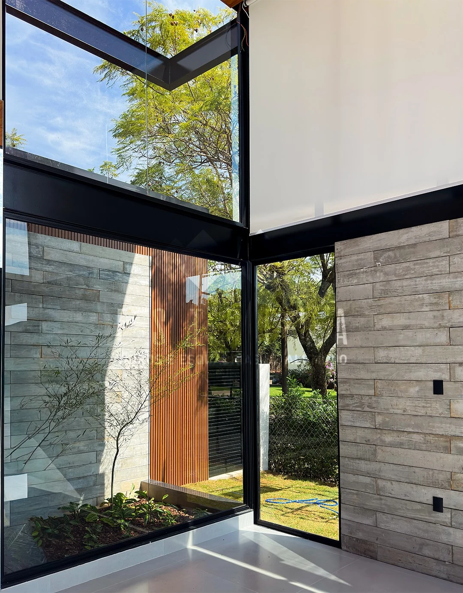
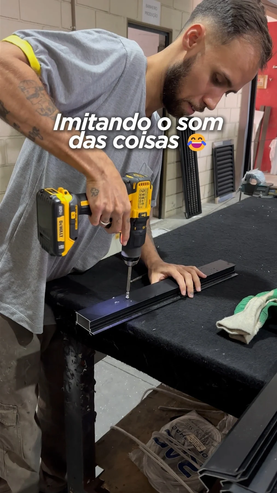

Condomínio Mantova
Alumínio preto, fachada envidraçada, portas panorâmicas e guarda-corpos para escada e mezanino.
Ver publicação originalSalto, Itu, Indaiatuba e região
Soluções em alumínio e vidro, sob medida para o seu projeto. Mais luz, integração e um acabamento que valoriza cada ambiente.
Há mais de 12 anos em projetos residenciais e comerciais.

Do detalhe de um ambiente ao projeto da sua casa.Veja os depoimentos dos clientes
4,3 134 avaliações no GoogleConsulta em outubro de 2026Veja os ambientes, os detalhes das esquadrias e os trabalhos da Estrela em vídeos e fotos.
Alumínio preto, fachada envidraçada, portas panorâmicas e guarda-corpos para escada e mezanino.
Ver publicação originalAcompanhamento de obra em Indaiatuba. Conheça de perto os perfis da Linha Perfetta Minimalista Slim.
Ver publicação originalEsquadrias até o teto, luz natural e painéis ripados na fachada e no interior.
Obra em parceria com RWA Construtora.
Ver publicação originalUm olhar sobre as esquadrias, os acabamentos e os detalhes apresentados pela Estrela.
Ver publicação originalPele de vidro na fachada, porta de entrada em alumínio e esquadrias pretas com persianas integradas.
Ver publicação originalEsquadrias por toda a casa, fachada em ripados de alumínio, guarda-corpos de vidro e boxes nos banheiros.
Ver publicação originalConversas de WhatsApp compartilhadas pela Estrela. Veja o que os clientes contam sobre o atendimento e a instalação.
Uma obra completa ou um ambiente específico. Conheça as possibilidades e converse com a equipe sobre o que o seu projeto precisa.
Conversar sobre meu projetoEsquadrias sob medida, com diferentes acabamentos. Portas de correr, grandes vãos e soluções para integrar ambientes e aproveitar a luz natural.
Fachadas envidraçadas e ripados de alumínio para compor a arquitetura do imóvel. As possibilidades dependem do projeto e do local de instalação.
Soluções em vidro para escadas, mezaninos e sacadas, com uma presença leve no ambiente. Consulte a configuração adequada ao seu projeto.
Boxes e fechamentos de banheiro com medidas e acabamentos definidos para o ambiente.
Portões de alumínio e possibilidades de cobertura. Fale com a equipe para verificar os materiais, modelos e condições disponíveis.
Você pode entrar em contato mesmo se a obra ainda estiver no planejamento.
Informe a cidade, o tipo de solução e em que etapa está a construção ou reforma.
Se tiver planta, fotos ou referências, tenha esse material em mãos para a conversa com a equipe.
Converse sobre medidas, acabamentos, investimento e programação antes de definir os próximos passos.

Há mais de 12 anos, a Estrela trabalha com soluções em vidro e alumínio para projetos residenciais e comerciais.
Com base em Salto e atuação em Itu, Indaiatuba e região, a empresa reúne atendimento personalizado e soluções sob medida para valorizar o imóvel.
Acompanhar a Estrela no InstagramLaís compartilha o dia a dia da empresa, os projetos e as possibilidades que cada obra traz.
Vidros e esquadrias fazem parte de decisões importantes para o seu imóvel. Conheça os trabalhos da Estrela e converse com a equipe sobre o que o seu projeto precisa.
Conversar com a equipe Conhecer a Laís no InstagramA Estrela atende Salto, Itu, Indaiatuba e região. Para outras localidades, consulte a equipe antes de solicitar o orçamento.
Sim. Você pode conversar sobre uma solução específica, como um box, uma porta ou um guarda-corpo, ou sobre os vidros e esquadrias de uma obra completa.
Você pode começar contando o que precisa e em que etapa está a obra. Se tiver medidas, planta ou fotos, compartilhe com a equipe para orientar a conversa e verificar a necessidade de medição.
A programação depende do projeto e da disponibilidade da agenda. Consulte o prazo com a equipe e alinhe a previsão de instalação com as outras etapas da sua obra.
Sim. O atendimento inclui projetos residenciais e comerciais, com soluções em vidro e alumínio sob medida.
Conte o que você precisa. A conversa continua no WhatsApp da Estrela.
(11) 95387-1057Av. José Maria Marques de Oliveira, 1190
Residencial Alvorada, Salto/SP